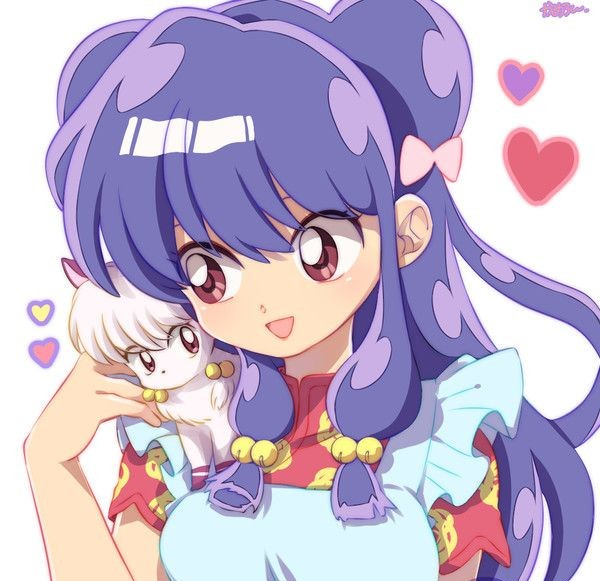

🐱 Shampoo

Shampoo es una guerrera amazona que está comprometida con Ranma debido a las tradiciones de su tribu.
🌀 Personalidad
Es cariñosa con Ranma, pero extremadamente peligrosa con sus rivales amorosas. Es persistente y muy hábil en las artes marciales.
❤️ Relaciones
- Ranma Saotome: Lo ama y está dispuesta a todo por casarse con él.
- Akane Tendo: La considera su rival y trata de alejarla de Ranma.
- Mousse: Está enamorado de ella, pero ella lo rechaza constantemente.
🔎 Curiosidades
- Se convierte en gata con el agua fría.
- Es una de las mejores luchadoras de su tribu amazona.
- Habla japonés con dificultad.
🔊 Escucha su voz
🔙 Volver a la lista de personajes